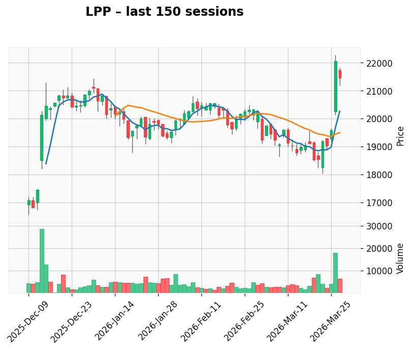
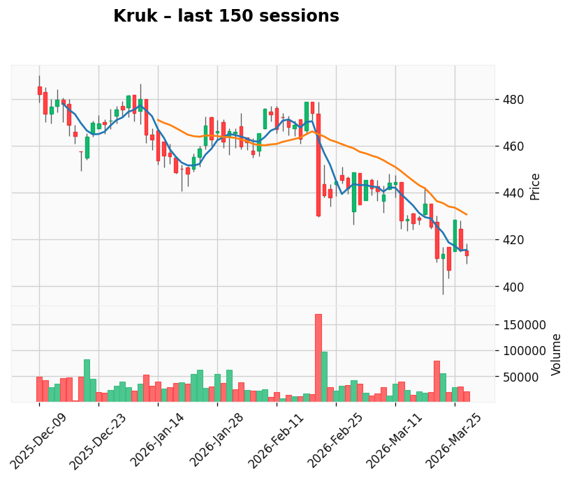

AI-generated analysis combining predictive modeling and recent market context.
Gap: 9.45% Candle: 53.73% (white)
LPP shows neutral sentiment (53.73%, gap 9.45%). No fresh news available.

Gap: 10.34% Candle: 53.53% (white)
Kruk shows neutral sentiment (53.53%, gap 10.34%). No fresh news available.
